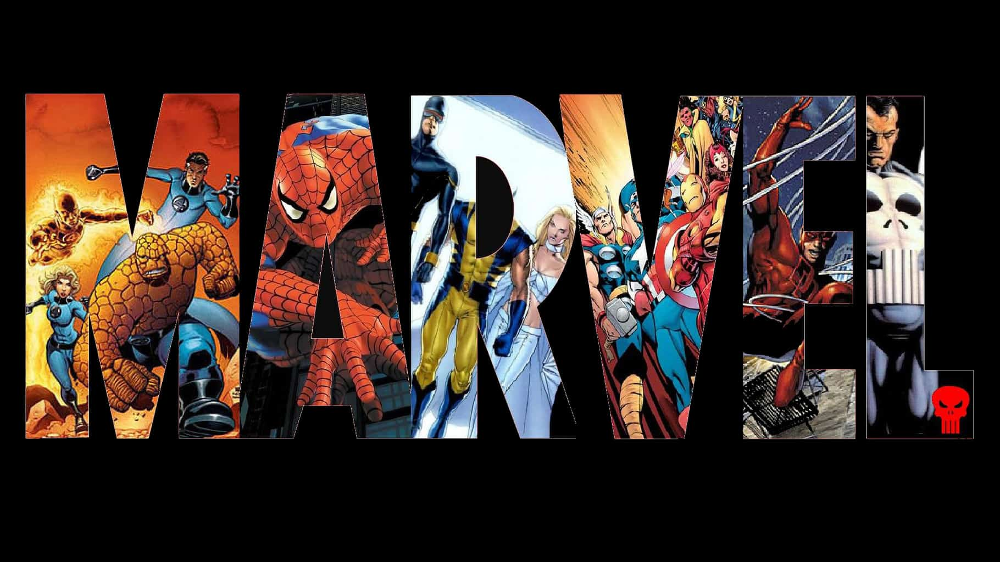

<ion-header>
  <ion-navbar color="danger">

      <ion-buttons>
          <button ion-button icon-only menuToggle>
            <ion-icon name="menu"></ion-icon>
          </button>
      </ion-buttons>

  </ion-navbar>

</ion-header>

<ion-content padding>

  

</ion-content>
